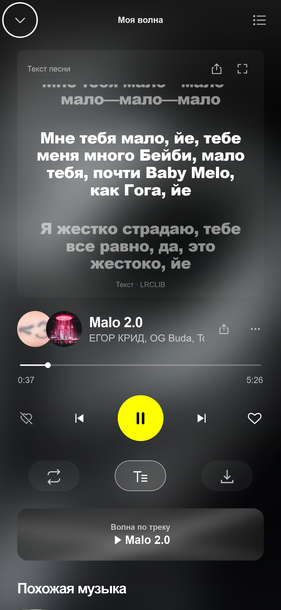
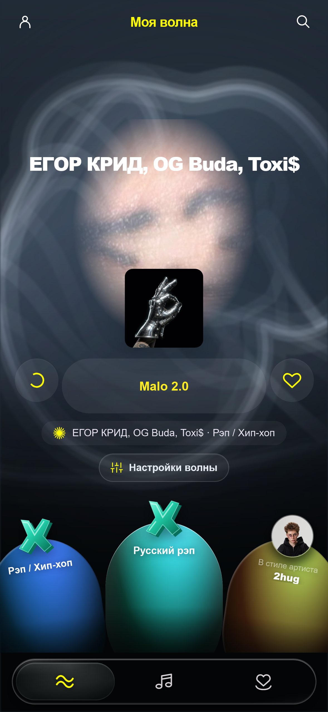
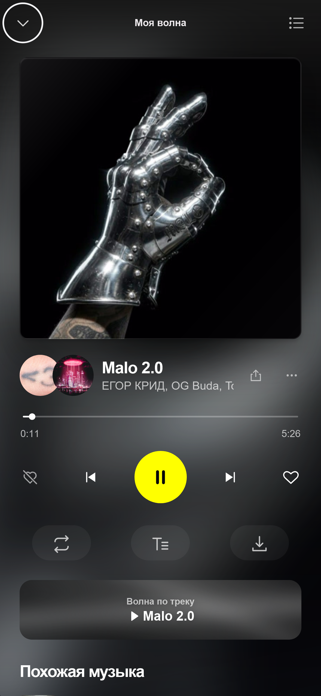
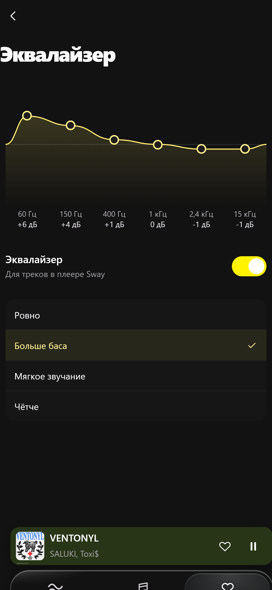
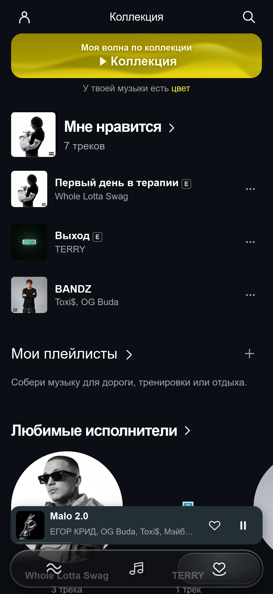
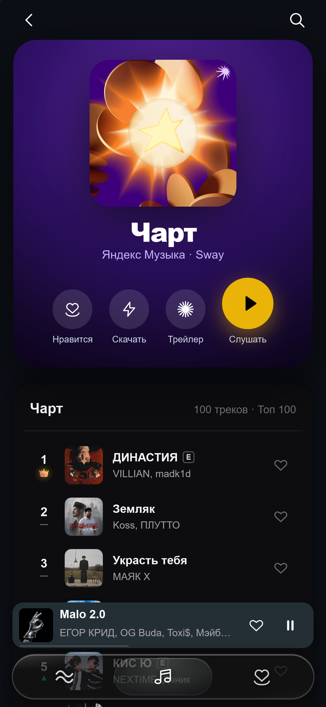

Твоя музыка.
Твой ритм.
Волна, тексты, эквалайзер и офлайн — прямо в браузере

Открыть Sway
music.academmix.ru


Бесконечный поток музыки под твой вкус
Волна, тексты, эквалайзер и офлайн — прямо в браузере

Текст бежит строчка за строчкой в такт музыке

Лайкай треки, собирай плейлисты, слушай без интернета


Без App Store — как обычное приложение